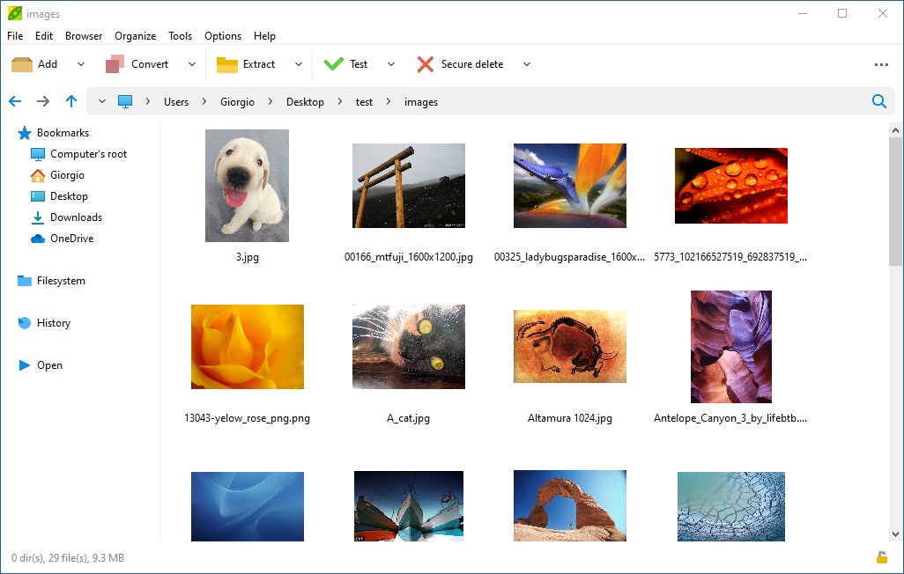

Some
types of graphic files (as lossy or lossless .JPEG,
.PNG, .GIF,
and compressed .TIFF) may be difficut to be efficiently
compressed, as some picture/photo file formats employ specific lossy or lossless
compression algorithms meant to efficiently compress graphic
data, and consequently
the already compressed image formats leads to very poor compression
ratio when added to an archive using general purpose compression
algorithms, even if higest compression levels are set.

|
When
archiving already compressed graphic files it is recommended to
use lowest/fastest compression settings in order to spare computational
resources, rather than gaining a small percentual improvement of
compression using maximum compression settings or slower algorithms.
Solid
compression may help, efficiently storing duplicate or very similar
data.
The
tradeoff between performance penaly and compression ratio gain would
not be favourable - if it is needed to keep
output under a maximum size limit (i.e. for email attachment),
it may be recommended, instead, to split
output in multiple volumes - as those types of files are often
already optimized to save as much disk space as possible. |

|
Alternative
ways, detailed below, to reduce images disk occupation are
to conver picture format to a more suitable one (this apply
graphic-specific compression on the data), or to reduce actual image
size, either by cropping (reduce the picture to a smaller selection,
containing relevant images) or resizing it to a smaller size suited to
the intended use.
Read more about computer
generated imagery (CGI) , digital
photography, RAW
image format, lossy and lossless
compression definition on Wikipedia. , digital
photography, RAW
image format, lossy and lossless
compression definition on Wikipedia.
Reduce size converting picture format
An alternative approach
to enhance compression efficiency of pictures /
photo raster or CGI graphic files in order to reduce space occupation
is
chosing the most appropriate graphic
coding format, and convert original picture to a more suitable image
format.

COMPRESS PNG, TIFF FILES
In example, PNG
(and to a lessen extent compressed TIFF) is extremely
efficient on regular shapes with low noise (geometric shapes,
charts,
simple drawings and computer-generated imagery imagery) so
recompressing a raw BMP or
uncompressed TIFF file to PNG format can really improve disk occupation
- moreover, being PNG compression lossless, no actual picture's data is
lost in the transformation.
COMPRESS JPEG FILES
On the other side, JPEG
is more efficient on photographic images, even
with average or high noise, so it should be chose over BMP,
compressed
or uncompressed TIFF, and PNG when saving actual photo or scans
rather than CGI graphic; it is consequently a popular choice for
consumer / prosumer digital photograpy.
Lossy
JPEG compression, however, degrades the quality of the picture
data at each iteration, so for better results it is recommended
to keep
original data, edit it using lossless formats (PNG, TIFF, or specific
photoediting file formats) for intermediate steps, and only apply lossy
JPEG compression when finalizing the work - keeping in account the
platform the graphic is meant to be used for.
COMPRESS BMP, RAW FILES
Uncompressed graphic files formats (i.e. RAW images, BMP files,
uncompressed TIFF) usually compresses well with traditional general
purpose compression (ZIP, 7Z...), but in this case is often
preferable to evaluate if it is needed to keep the original, large,
uncompressed
files, or rather convert them to a lossless picture format (usually PNG
or TIFF) that does not modify the original file information but stores
it in a smaller file, ready to use/view without requiring extraction.
PeaZip features a
simple set
of image
editing tools, with Transform dialog
providing the needed functions to convert any readable
picture format to BMP, PNG, or JPEG.
If JPEG format is chosen, lossy JPG
compression quality can be set in a range from 0 to 100: lower quality
means more efficient picture compression and smaller output pictures,
but the increase of JPG compression artifacts will degrade the quality
of
the image; higher JPG quality value will result in better pictures, but
saved to larger output files.
Reduce image size with crop and resize funtions
Another critical
factor for optimizing graphic files disk occupation is
picture size, i.e. reducing
the original picture size to 50% reduces the
output to the 25% of the original file size, sparing 75% of
space.
Resizing the picture
to a smaller size (featured in PeaZip graphic files' Transform dialog)
is a lossy operation: the removed information is lost
and expanding back the image to a larger size will not add back the
original information, so resizing the graphic should be done in the
final step, accurately chosen for the intended platform.
If the smaller size is acceptable for the intended use, reducing
picture size is a very effective mean to decrease file size.
PeaZip's Transform dropdown menu also features fit to screen pre-sets entries to
scale the image to most common screen sizes.
Picture cropping
(provided by PeaZip picture Crop dialog),
removes unwanted or less important area of the raw image: it is too an
obviously lossy operation and cut area cannot be recovered from the
cropped image, but in this way both size of the picture and size of the
file can be reduced without altering the quality of the remaining
portion of the graphic.
PeaZip file manager and
image viewer can
be used as
batch image editor utility, providing a basic
set of tools to (batch) edit graphic file
types, accessible from application's context menu and selecting Image
manager tool bar.

Rotate images left / right
The first area of batch
editing and management tool
bar contains rotate images
left /
right (rotate the picture counterclockwise / clockwise) buttons
and a dropdown menu
with more rotation features
(rotate image 200°, flip image vertically and mirror horizontally),
i.e. for setting
correct portrait / landscape orientation of photoes and graphic files.
Crop images
Crop images button opens
a
dialog that allows to crop images
at
each side
(top, bottom, left, right) of
selected images of a given amount, expressed in percentage or in
pixels. This utility allows to reduce the size of the graphic file
removing unnecessary data and keeping the desired area, and to improve
the quality of the picture
i.e. regulating the offset of a photo on each side.
Transform button opens a
dialog to batch resize and/or convert
selected images.
Resize images (scaling and fit to screen)
Picture transformation
dialog allows to resize images to a
specified pixel size
or resize the picture to specified
percentage, either maintaining aspect ratio (keeping proportion
between width and height sizes) or applying a deformation to the image
- either expressed as new pixel width and height, or as percentage of
the two dimensions of the image.
Resizing pictures greatly reduces
the disk space occupation of images, as a 50% scaling will halve
height and witdth, reducing the final image area to 25% of the original
one, employing 1/4 of original number of pixel to represent the resized
image which will consequently occupy 1/4 of uncompressed size -
reduction of compressed size will vary.
Alternatively,
transformation can fit
the image to specified screen size, reducing the image width and
height in order to be completely contained in the provided screen size,
or let the original picture size and proportions unchanged.
Read more about crop images and resize
images
(scaling) on
Wikipedia.
Convert graphic file format i.e. PNG to JPEG
Convert image format
function in transformation dialog allows to save the input graphic file
in the specified output file format: JPEG, PNG or BMP (raw RGB bitmap
file).
For JPEG format it is available a dialog to set lossy JPG
compression quality from 0 to 100, lower quality provides better
compression ratio, but introduces more JPG compression artifacts.
Conversely, high quality JPG images will occupy more space on disk.
The dropdown menu on the right of Transform button provides quick
access to most common image transformation operations: resize to a given percentage, fit image to most common screen sizes,
convert picture to JPG, or PNG, or BMP format.
Whenever a graphic file (or group of pictures) is modified, the user is
prompted to overwrite or preserve original files, automatically
renaming new transformed graphic files - this is especially useful as
most operations on pictures involves lossy algorithms to be applied,
which cannot be inverted to restore the original graphic data if the
original copy was not kept.
Last area contains Find duplicate
files, a fast crc/hash based deduplication tool to batch
highlight identical picture files, Rename button, and file management
dropdown
menu to complete the toolbar providing additional useful features to
manage
collections of images or photo.
PeaZip's file
manager provides
an integrated image viewer,
showing picture's thumbnails in various pre-set sizes and styles,
ranging from 16 px extra small to 192 extra large thumbnails, and a set
of graphic
editing tools to
manage and organize images albums / collections.
Thumbnails are shown while browsing the filesystem, not when browsing
archives - this would require decompressing them first (at least
in-memory) but for better security no automatic extraction action takes
place in PeaZip - anyway archived files (of any kind) can be previewed
with double-click. Preview extracts data to a temporary work folder,
which is deleted when PeaZip is closed.
Supported graphic formats are BMP,
PNG, GIF, TIFF, XPM, PBM, PGM, icons (ICO, ICNS, CUR), and JPG (.jpeg, .jpe, .jif, .jfi).
Most common thumbnail viewer presets are shown in the application's
status bar: no thumbnails details view on the left, medium icons (48 px
thumbnails) list in the center, and large icons (96 px thumbnails) mode
on the right.
"Show picture thumbnails" feature is not enabled by default, it can be
toggled on/off from context menu > Navigation, and from main menu
> Organize.
More ways
to set the file manager's integrated image viewer, as shown below, are
accessible from context menu > Navigation, and from main menu >
Organize (in Browser and Presets submenus).

Large 192px thumbnails icon mode (classic vertical scrolling), other
pre-set modes (also clickable in status bar, on the right) are:
- medium
48px thumbnails list view (horizontal scrolling)
- "Details and thumbnails" pre-set style combining 48px
icons with
detailed information about the image files including image size in
pixel and color depth - and optionally CRC32 or other checksum and hash
functions (MD5, SHA1, SHA256...) to find matching duplicate images.
Read more about image viewers on
Wikipedia
Synopsis: Optimize
graphic files compression with PeaZip file manager. Reduce JPG PNG BMP
TIFF size. Reduce disk space occupation of image files. How to resize,
crop, convert pictures using PeaZip images editor tools.
Topics: compress
pictures, reduce size of graphic files, edit and optimize images
PeaZip > FAQ >
Compress convert resize optimize BMP JPEG PNG graphic files
|